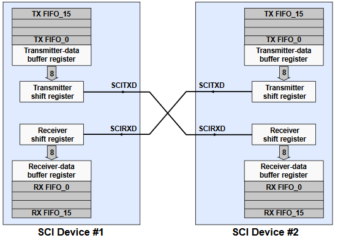
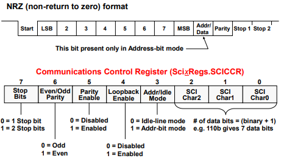
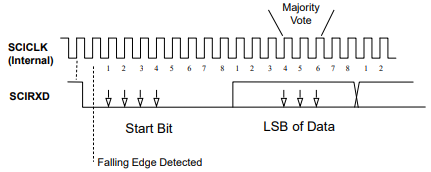
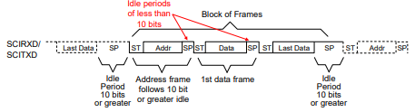
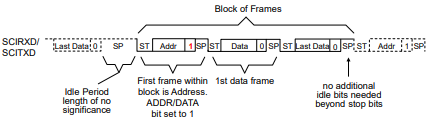

Serial Communication Interface (SCI)#
The SCI is a two-wire asynchronous serial port (also known as a UART) that supports communications between the processor and other asynchronous peripherals that use the standard non-return-to-zero (NRZ) format.
In addition, the C28x SCI is a full duplex interface which provides for simultaneous data transmit and receive. Parity checking and data formatting is also designed to be done by the port hardware, further reducing software overhead.
SCI Pin Connections#
A receiver and transmitter FIFO is used to reduce servicing overhead. The SCI transmit and receive registers are both double-buffered to prevent data collisions and allow for efficient CPU usage.

SCI Data Format#

The basic unit of data is called a character and is 1 to 8 bits in length. Each character of data is formatted with a start bit, 1 or 2 stop bits, an optional parity bit, and an optional address/data bit.
A character of data along with its formatting bits is called a frame. Frames are organized into groups called blocks. If more than two serial ports exist on the SCI bus, a block of data will usually begin with an address frame which specifies the destination port of the data as determined by the user’s protocol.
The beginning of a frame is marked by the start bit going low.
The SCI uses a NRZ (Non-Return-to-Zero) format which means that in an inactive state the SCIRX and SCITX lines will be held high.
Peripherals are expected to pull the SCIRX and SCITX lines to a high level when they are not receiving or transmitting on their respective lines.
SCI Data Timing#
8 SCICLK periods per data bit
Start bit valid if 4 consecutive SCICLK periods of zero bits after falling edge
Majority vote taken on 4th, 5th, and 6th SCICLK cycles

Multiprocessor Wake-Up Modes#
Allows numerous processors to be hooked up to the bus, but transmission occurs between only two of them
Idle-line or Address-bit modes
Sequence of Operation
Potential receivers set SLEEP=1, which disables RXINT except when an address frame is received
All transmissions begin with an address frame
Incoming address frame temporarily wakes up all SCIs on bus
CPUs compare incoming SCI address to their SCI address
Process following data frames only if address matches
Idle-Line Wake-Up Mode#
Idle time separates blocks of frames
Receiver wakes up when SCIRXD high for 10 or more bit periods
Two transmit address methods
Deliberate software delay of 10 or more bits
Set TXWAKE bit to automatically leave exactly 11 idle bits

Address-Bit Wake-Up Mode#
All frames contain an extra address bit
Receiver wakes up when address bit detected
Automatic setting of Addr/Data bit in frame by setting TXWAKE=1 prior to writing address to SCITXBUF

SCI Interrupts#
The SCI interrupt logic generates interrupt flags when it receives or transmits a complete character as determined by the SCI character length. This provides a convenient and efficient way of timing and controlling the operation of the SCI transmitter and receiver.
Interrupt Flags
The interrupt flag for the transmitter is TXRDY, and for the receiver RXRDY.
How is the TX Interrupt Flag set?
TXRDY is set when a character is transferred to TXSHF and SCITXBUF is ready to receive the next character. In addition, when both the SCIBUF and TXSHF registers are empty, the TX EMPTY flag is set.
How is the RX Interrupt Flag set?
When a new character has been received and shifted into SCIRXBUF, the RXRDY flag is set. In addition, the BRKDT flag is set if a break condition occurs.
What is a break detect?
A break condition is where the SCIRXD line remains continuously low for at least ten bits, beginning after a missing stop bit. This error flag is cleared through a software reset of the SCI through “SWRESET”.
SCI Error Flags
Additional flag and interrupt capability exists for other receiver errors. The RX ERROR flag is the logical OR of the break detect (BRKDT), framing error (FE), receiver overrun (OE), and parity error (PE) bits. RX ERROR high indicates that at least one of these four errors has occurred during transmission. This will also send an interrupt request to the CPU if the RX ERR INT ENA bit is set.
SCI Summary#
Asynchronous communications format
65000+ different programmable baud rates
Two wake-up multiprocesssor modes
Idle-line wake-up
Address-bit wake-up
Programmable data word format
1 to 8 bit data word length
1 or 2 stop bits
even/odd/no parity
Error Detection Flags
Parity error; Framing Error; Overrun error; Break detection
Transmit FIFO and receive FIFO
Individual interrupts for transmit and receive
Resources#
Feedback
Please provide any feedback you may have about the content within C2000 Academy to: c2000_academy_feedback@list.ti.com